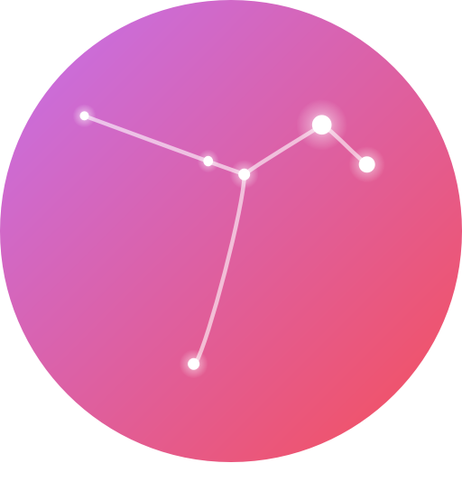
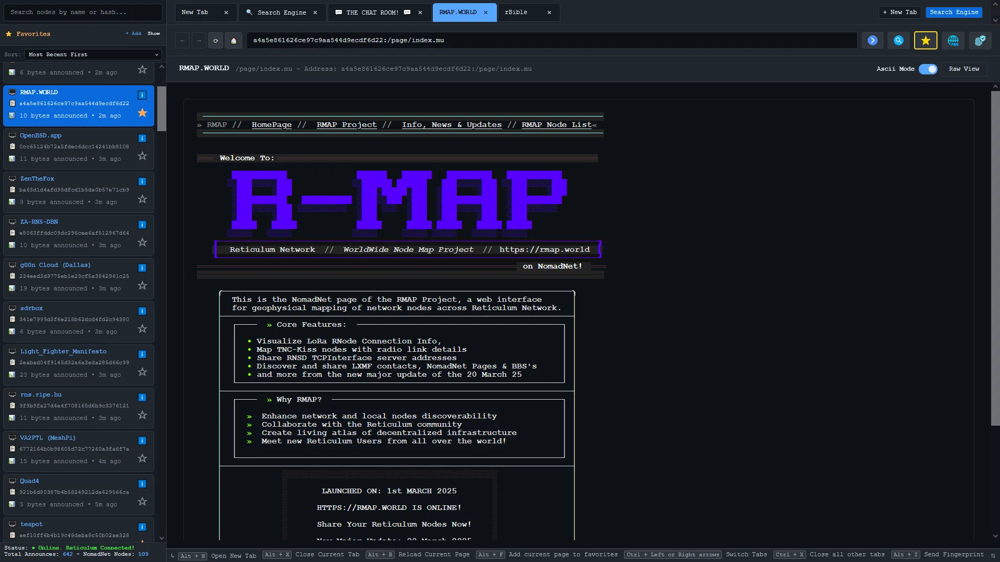
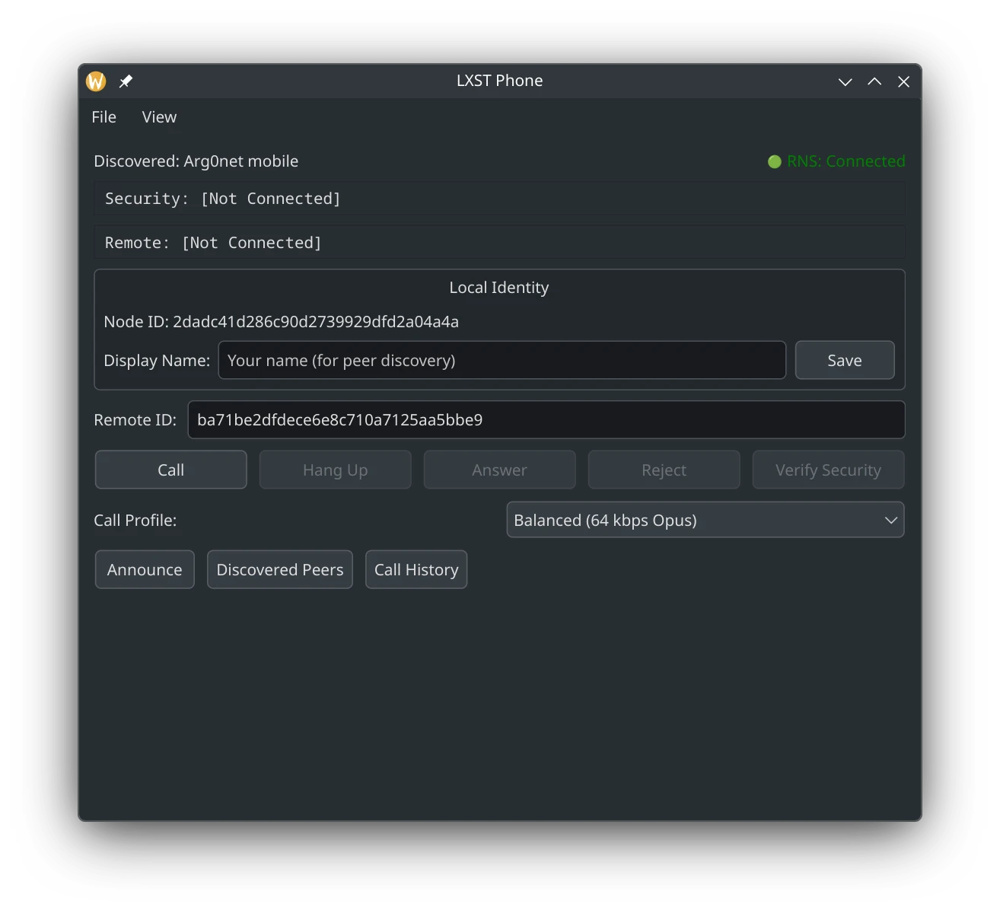

Programs Using Reticulum¶
This chapter provides a non-exhaustive list of notable programs, systems and application-layer protocols that have been built using Reticulum.
These programs will let you get a feel for how Reticulum works. Most of them have been designed to run well even over slow networks based on LoRa or packet radio, but all can also be used over fast links, such as local WiFi, wired Ethernet, the Internet, or any combination.
As such, it is easy to get started experimenting, without having to set up any radio transceivers or infrastructure just to try it out. Launching the programs on separate devices connected to the same WiFi network is enough to get started, and physical radio interfaces can then be added later.
Programs & Utilities¶
Many different applications using Reticulum already exist, serving a wide variety of purposes from day-to-day communication and information sharing to systems administration and tackling advanced networking and communications challenges.
Development of Reticulum-based applications and systems is ongoing, so consider this list a non-exhaustive starting point of some of the options available. With a bit of searching, primarily over Reticulum itself, you will find many more interesting things.
Remote Shell¶
The rnsh program lets you establish fully interactive
remote shell sessions over Reticulum. It also allows you to pipe any program to or from a
remote system, and is similar to how ssh works. The rnsh program is very efficient, and
can facilitate fully interactive shell sessions, even over extremely low-bandwidth links,
such as LoRa or packet radio.
In addition to the default, fully interactive terminal mode,
for extremely limited links, rnsh offers line-interactive mode, allowing you to interact
with remote systems, even when link throughput is counted in a few hundreds of bits per second.
Nomad Network¶
The terminal-based program Nomad Network provides a complete encrypted communications suite built with Reticulum. It features encrypted messaging (both direct and delayed-delivery for offline users), file sharing, and has a built-in text-browser and page server with support for dynamically rendered pages, user authentication and more.

Nomad Network is a user-facing client for the messaging and information-sharing protocol LXMF.
RNS Page Node¶
RNS Page Node is a simple way to serve pages and files to any other Nomad Network compatible client. Drop-in replacement for NomadNet nodes that primarily serve pages and files.
Retipedia¶
You can host the entirity of Wikipedia (or any .zim) file to other Nomad Network clients using Retipedia.
Sideband¶
If you would rather use an LXMF client with a graphical user interface, you can take a look at Sideband, which is available for Android, Linux, macOS and Windows. Sideband is an advanced LXMF and LXST client, and a multi-purpose Reticulum utility, with features and functionality targeted at advanced users.

Sideband allows you to communicate with other people or LXMF-compatible systems over Reticulum networks using LoRa, Packet Radio, WiFi, I2P, Encrypted QR Paper Messages, or anything else Reticulum supports.
It also interoperates with all other LXMF clients, and provides advanced features such as voice messaging, real-time voice calls, file attachments, private telemetry sharing, and a full plugin system for expandability.
MeshChatX¶
A Reticulum MeshChat fork from the future, with the goal of providing everything you need for Reticulum, LXMF, and LXST in one beautiful and feature-rich application. This project is separate from the original Reticulum MeshChat project, and is not affiliated with the original project.

Features include full LXST support, custom voicemail, phonebook, contact sharing, and ringtone support, multi-identity handling, modern UI/UX, offline documentation, expanded tools, page archiving, integrated maps and improved application security.
MeshChat¶
The Reticulum MeshChat application is a user-friendly LXMF client for Linux, macOS and Windows, that also includes a Nomad Network page browser and other interesting functionality.

Reticulum MeshChat is of course also compatible with Sideband and Nomad Network, or any other LXMF client.
Columba¶
Columba is a simple and familiar LXMF messaging app Android, built with a native Android interface and Material Design 3.
While still in early and very active development, it is of course also compatible with all other LXMF clients, and allows you to message seamlessly with anyone else using LXMF.
Reticulum Relay Chat¶
Reticulum Relay Chat is a live chat system built on top of the Reticulum Network Stack. It exists to let people talk to each other in real time over Reticulum without dragging in message databases, synchronization engines, or architectural commitments they did not ask for.
The rrcd program provides a functional, reference RRC hub-server daemon implementation. RRC user clients include rrc-gui and rrc-web.
RRC is closer in spirit to IRC than to modern “everything platforms.” You connect, you join a room, you talk, and then you leave. If you were present, you saw the conversation. If you were not, the conversation did not wait for you. This is not an accident. This is the entire design.
RetiBBS¶
RetiBBS is a bulletin board system implementation for Reticulum networks.

RetiBBS allows users to communicate through message boards in a secure manner.
RBrowser¶
The rBrowser program is a cross-platoform, standalone, web-based browser for exploring NomadNetwork Nodes over Reticulum Network. It automatically discovers NomadNet nodes through network announces and provides a user-friendly interface for browsing distributed content with Micron markup support.
Includes useful features like automatic listening for announce, adding nodes to favorites, browsing and rendering any kind of NomadNet links, downloading files from remote nodes, a unique local NomadNet Search Engine and more.
Reticulum Network Telephone¶
The rnphone program, included as part of the LXST package is a command-line Reticulum telephone utility and daemon, that allows building physical, hardware telephones for LXST and Reticulum, as well as simply performing calls via the command line.
It supports interfacing directly with hardware peripherals such as GPIO keypads and LCD displays, providing a modular system for building secure hardware telephones.
LXST Phone¶
The LXST Phone program is a cross-platform desktop application for performing LXST voice calls over Reticulum.
It supports various advanced features such as SAS verification, peer blocking, rate limiting, encrypted call history storage and contact management.
LXMFy¶
LXMFy is a comprehensive and advanced bot creation framework for LXMF, that allows building any kind of automation or bot system running over LXMF and Reticulum. Bot implementations exist for Home Assistant control, LLM integrations, and various other purposes.
LXMF Interactive Client¶
LXMF Interactive Client is a feature-rich, terminal-based LXMF messaging client with many advanced features and an extensible plugin architecture.
RNS FileSync¶
The RNS FileSync program enables automatic file synchronization between devices without requiring central servers, internet connectivity, or cloud services. It works over any network medium supported by Reticulum, including radio, LoRa, WiFi, or the internet, making it ideal for off-grid, privacy-focused, and resilient file sharing.
Micron Parser JS¶
Micron Parser JS is the JavaScript-based parser for the Micron markup language, that most web-based Nomad Network browsers use. If you want to make utilities or tools that display Micron pages, this library is essential.
RNMon¶
RNMon is a monitoring daemon designed to monitor the status of multiple RNS applications and push the metrics to an InfluxDB instance over the influx line protocol.
Protocols¶
A number of standard protocols have emerged through real-world usage and testing in the Reticulum community. While you may sometimes want to use completely custom protocols and implementations when writing Reticulum-based software, using these protocols provides application developers with an easy way to implement advanced functionality quickly and effortlessly. Using them also ensures compatibility and interoperability between many different client applications, creating an open communications ecosystem where users are free to choose the applications that suit their needs, while remaining connected to everyone else.
LXMF¶
LXMF is a simple and flexible messaging format and delivery protocol that allows a wide variety of applications, while using as little bandwidth as possible. It offers zero-conf message routing, end-to-end encryption and Forward Secrecy, and can be transported over any kind of medium that Reticulum supports.
LXMF is efficient enough that it can deliver messages over extremely low-bandwidth systems such as packet radio or LoRa. Encrypted LXMF messages can also be encoded as QR-codes or text-based URIs, allowing completely analog paper message transport.
Using Propagation Nodes, LXMF also offer a way to store and forward messages to users or endpoints that are not directly reachable at the time of message emission.
LXST¶
LXST is a simple and flexible real-time streaming format and delivery protocol that allows a wide variety of applications, while using as little bandwidth as possible. It is built on top of Reticulum and offers zero-conf stream routing, end-to-end encryption and Forward Secrecy, and can be transported over any kind of medium that Reticulum supports. It currently powers real-time voice and telephony applications over Reticulum.
RRC¶
The Reticulum Relay Chat protocol, is a live chat system built on top of the Reticulum Network Stack. It exists to provide near real-time group communication without dragging in message history databases, federation machinery, or architectural guilt.
RRC is intentionally simple. It does not pretend to be email, a mailbox, or a distributed archive. It behaves more like a conversation in a room. If you were there, you heard it. If you were not, you did not. That is not a bug, that is the point.
Interface Modules & Connectivity Resources¶
This section provides a list of various community-provided interface modules, guides and resources for creating Reticulum networks over special or challenging mediums.
Custom interface module for running RNS over HTTP
Guide for running Reticulum over ICMP using
PipeInterfaceGuide for running Reticulum over DNS with Iodine
Guide for running Reticulum over HF radio
Modem73 is a KISS TNC OFDM modem frontend that can be used with Reticulum